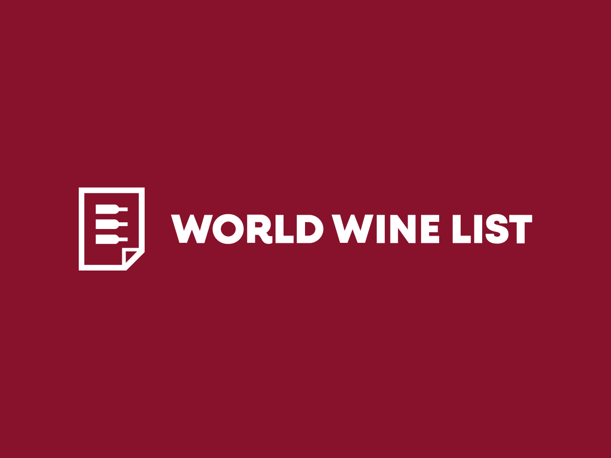

World Wine List
Международная цифровая B2B‑платформа, объединяющая верифицированных участников винного рынка: винодельни, импортёров, дистрибьюторов и ритейлеров. Сервис помогает находить вино напрямую у поставщиков и заключать сделки внутри единой экосистемы.

Период работы
С 2022 по 2026 год.
Роль
UX/UI-дизайнер в составе аутсорсинговой дизайн-команды.
Зона ответственности
Проектирование пользовательских интерфейсов и сценариев. Разработка новых функций и развитие существующих разделов платформы, подготовка макетов к разработке, поддержка и развитие UI-кита продукта.
Коммуникация
Работал в паре с прикриплённым продакт-менеджером со стороны заказчика. Участвовал в анализе задач, обсуждении решений, согласовании интерфейсов и сопровождении реализации.
Кейс в процессе написания
Скоро здесь появится описание завершённых задач и примеры реализованных интерфейсов…